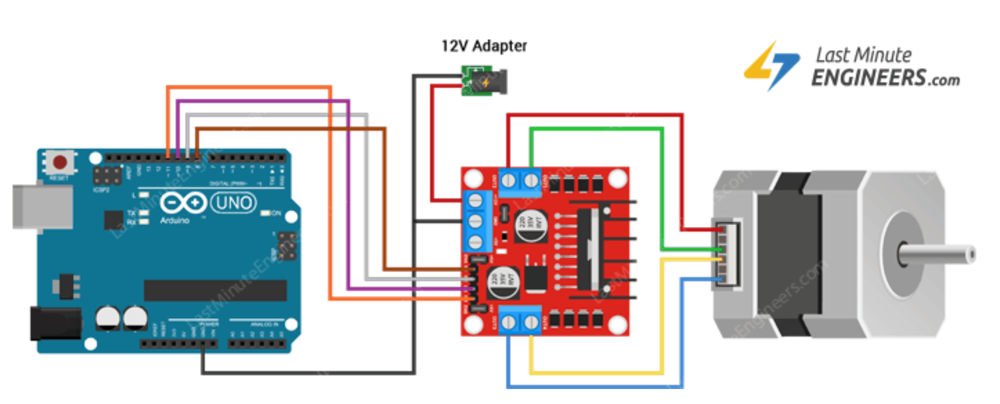

Simple and Slow

Fast and Furious

Redemption!
This week's assignment was to use a microcontroller to operate an output device that we had not used before.
Arduino Uno, Arduino/C, breadboard, stepper motor, motor driver, buzzer, LED strip, servo motor
Output devices come in many forms such as actuators, speakers/sound synthesizers, heat, light, pneumatic valves, and even different forms of communication. For class, we focused mostly on motors which we had yet to discuss and had a large supply of (servos, steppers, and DC motors).
During class, we simply hooked up the servo to the arduino and ran the example code provided to check the degree of rotation of the servo. My servo rotated 120 degrees. To make it a little more interesting, I made the servo rotate to different angles at varying speeds.
But... time constraints! YAY! So I decided to just make a motor rotate based on values outputted by the ultrasonic sensor.
Using the tutorial online (see https://roberthart56.github.io/SCFAB/SC_lab/Output_Devices/FET/index.html), I I was able to wire the DC motor to the Uno using a transistor.
Much of this was just following the tutorial but I did want to explain some of the basic components of the cicruit. An FET, or a field-effect transistor, is a device in which the small current delivered to one terminal (gate or base) controls a large current using the source and drain leads. Transistors are usually used as amplifiers, an example being in electrodes to record neuronal activity for EMG or ECG. We used an FET here to control a current larger than about 20mA with a microcontroller.
We used the IRLD024 FETs, which can conduct up to 2.5 Amps, and can operate with drain voltage up to 60V (see tutorial page for more info).
A diode was necessary to protect the FET from transient voltage spikes as the motor turned on and off.
And walla! A spinning motor!.

The LED strip tutotial was easy to follow (see https://nathanmelenbrink.github.io/ps70/08_output/led-buzzers.html). The only problem was that one of the wires was soldered onto DO (to this day I do not know that stands for unfortunately.) The problem wasn't too big -- with the help of these guys:


Using the example code from Arduino, I was able to change the color of the lights and the times at which they started to blink like crazy...
After failing to make a working gear clock back in Week 3, I decided to make a timer for this assignment. My sister also kinda wants a timer that would shut off her stove after some set time so I guess this could come in handy later?


I first had to determine which wires were A+, A-, B+, B- to connect to the output and input ports on the motor driver. I did this by throwing on an LED to two of the wires and rotating the shaft of the stepper to see if the LED lit up. In this case it did, so I connected these to out1 and out2 on the motor driver. The other two I connected to out3 and out4.
I then hooked up the input1, input2, input3, input4 pins to the Uno as shown in the image, along with the ENA and ENB pins that when run high, drove the motor pins in the output.
Although I couldn't find a wiring diagram for the pinout, I used this instead, which was quite similar.
The goal was to make a timer that would buzz every x seconds. I decided to keep the x value here small (15 seconds) for testing purposes but it could well be used for any length of time!

The timing of the buzzer was a bit annoying to calibrate. First off, I made the stepper take 200 steps per revolution with a delay that would translate to a second (after calibration this ended up being 133 ms). I basically saw what the readout of the number of steps was and made a for loop that would go through each index before buzzing at the ith index and start again (reset to zero).
You can't hear the buzzer unfortunately, but I can assure you that it worked!